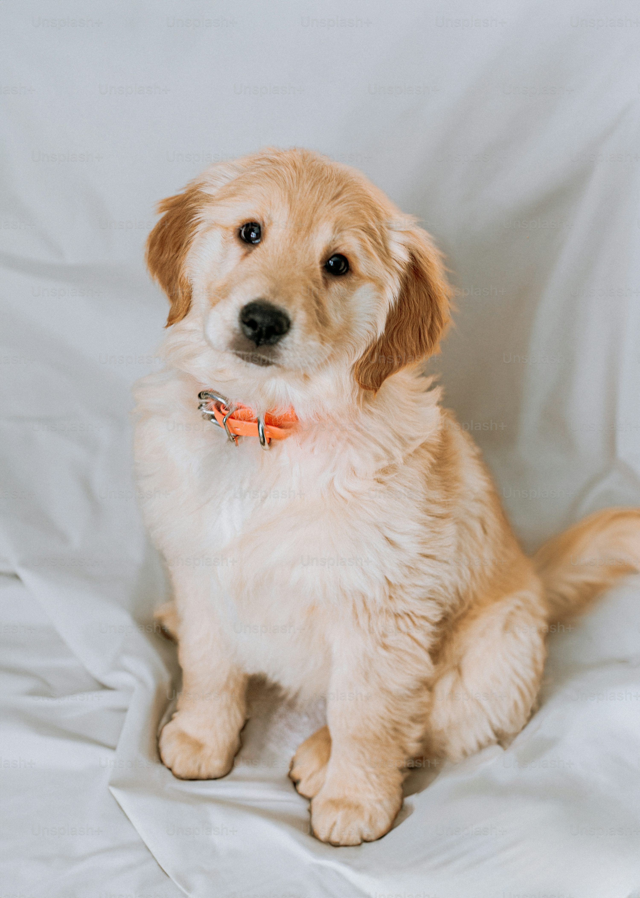
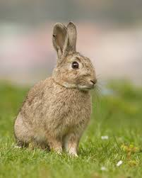

La fundación Patitas Cortas está dedicada a rescatar animalitos de la calle, maltratados y abandonados, otorgándoles un hogar, comida, atención médica y un cariño incondicional. Trabajamos arduamente para encontrar un hogar permanente a cada uno de nuestros residentes.

🐾 Max (Labrador)
Max es un Labrador joven, lleno de energía y muy juguetón. Fue rescatado y ya está listo para unirse a una familia que ame los paseos al aire libre. Es muy sociable con niños y otros perros.
.jpg)
🐈 Luna (Gata)
Luna es una gata adulta, tranquila y muy cariñosa. Le encanta tomar siestas al sol y es la compañera perfecta para una persona que busque calma. Está esterilizada y vacunada.

🐇 Pipo (Conejo)
Pipo es un conejo de orejas caídas, muy curioso y con un apetito insaciable por las zanahorias. Ideal para familias con niños mayores. Necesita un espacio seguro y tranquilo en casa.
💡 Datos Curiosos sobre Animales
Tener una mascota reduce el estrés y la presión arterial. Adoptar no solo salva una vida, sino que mejora la tuya.
Los perros tienen un sentido del olfato 100,000 veces mejor que el de los humanos, lo que les permite detectar enfermedades.
Los gatos pasan alrededor del 70% de sus vidas durmiendo. ¡Son campeones mundiales de la siesta!
📍 Nuestra Ubicación y Contacto
Nuestra Fundación opera gracias a voluntarios y donaciones. Te invitamos a conocer nuestras instalaciones y a nuestros residentes. ¡Abrimos nuestros brazos a quienes quieran ayudar o adoptar!